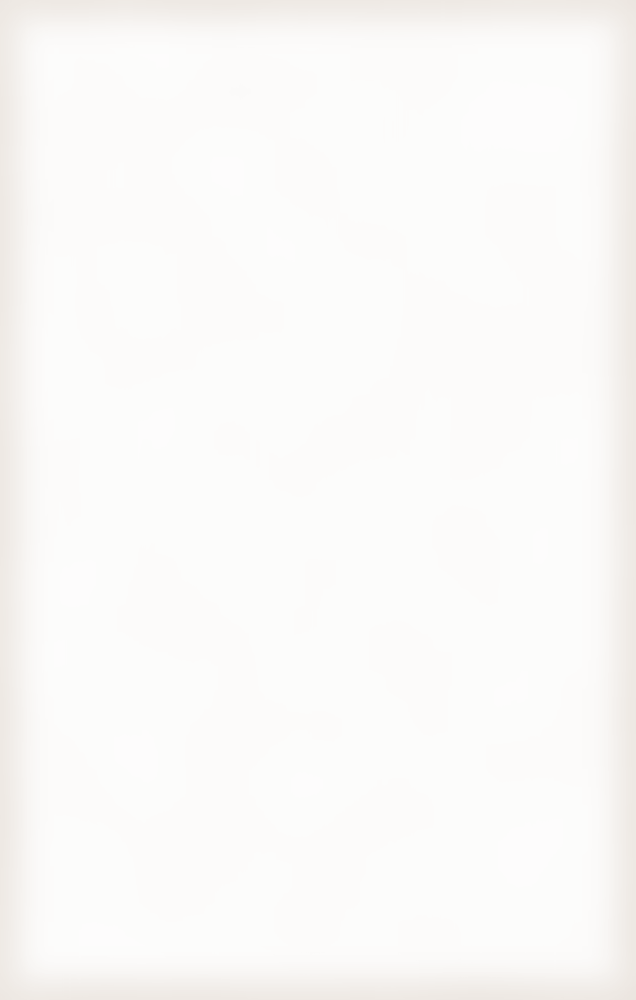
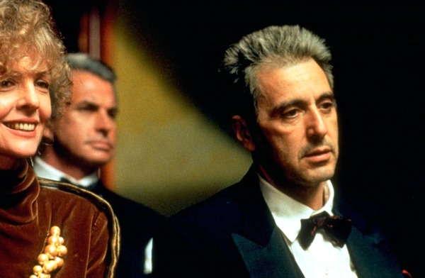

Nel Ridotto, dopo il sipario
CENA DOPO L'OPERA
Supper after the opera. Una sera in Sicilia.

Gala night. The Corleone party arrives.
Dal camerino
Papa, you came back to Sicily to hear me sing. Tonight Turiddu is for you. Stay for supper after, Mamma has promised she will.
Anthony
ATTO UNICO
Pasta alla Norma L. 6.000
Rigatoni, fried eggplant, tomato and basil, under grated ricotta salata.
Pasta con le sarde L. 7.500
Fresh sardines, wild fennel, raisins, pine nuts and toasted crumbs.
INTERMEZZO
Cannoli L. 2.500
Crisp shells filled to order with sweet ricotta, candied orange, pistachio.
Cassatina L. 3.000
Sponge, sweet ricotta and green marzipan, crowned with candied fruit.
BRINDISI
a toast
Marsala vergine L. 2.000
Dry, amber and cool. Raise it to the new Commendatore.
Caffè L. 600
Short and black, from the bar in the Ridotto.
MANEGGIARE
CON CURA
handle with care
Prices subject to change. Orange juice is kept at the bar for any guest who feels faint.
Programma n. 1990. Piazza Verdi, Palermo. Cannoli may be sent up to your palco.
Programma n. 1990. Piazza Verdi, Palermo. Cannoli may be sent up to your palco.